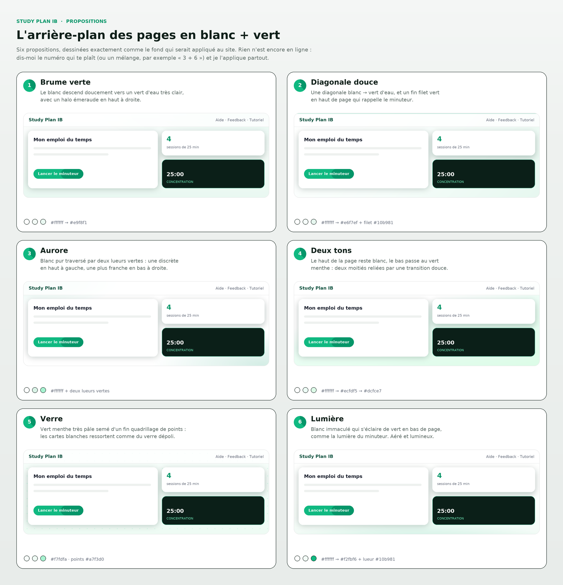
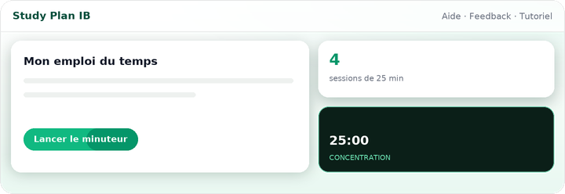
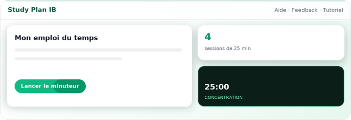
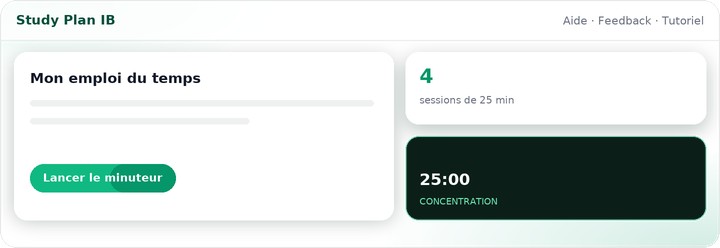
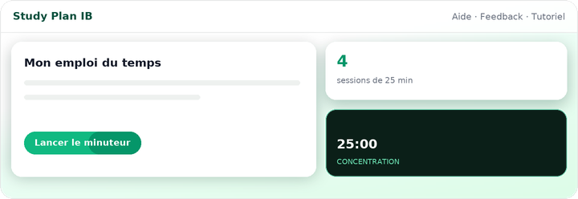
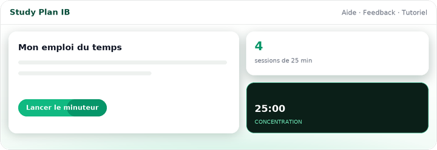

Study Plan IB · propositions
Chaque image montre une vraie mini-page posée sur le fond proposé : barre du haut, carte blanche, bouton vert et petite tuile sombre du minuteur. Rien n'est encore appliqué au site.


body {
background:
radial-gradient(120% 80% at 100% 0%, rgba(16,185,129,0.10), transparent 60%),
linear-gradient(180deg, #ffffff 0%, #f4fbf7 50%, #e9f8f1 100%);
}
body {
background: linear-gradient(135deg, #ffffff 0%, #f6fdfa 52%, #e6f7ef 100%);
}
/* + un filet de 3 px en haut, dégradé #10b981 → #059669 */
body {
background:
radial-gradient(55% 45% at 6% 2%, rgba(16,185,129,0.13), transparent 62%),
radial-gradient(70% 60% at 97% 98%, rgba(5,150,105,0.17), transparent 64%),
#ffffff;
}
body {
background: linear-gradient(168deg, #ffffff 0%, #ffffff 34%, #ecfdf5 49%, #dcfce7 100%);
}body {
background:
radial-gradient(rgba(167,243,208,0.55) 1px, transparent 1.2px) 0 0 / 22px 22px,
linear-gradient(180deg, #f7fdfa, #eefbf4);
}
body {
background:
radial-gradient(90% 55% at 50% 118%, rgba(16,185,129,0.22), transparent 66%),
linear-gradient(180deg, #ffffff 0%, #fbfefc 58%, #f2fbf6 100%);
}À savoir : dans les six, les cartes blanches, les boutons verts (#10b981 → #059669), le texte et la tuile sombre du minuteur ne changent pas — seul le fond des pages bouge. Les trois halos flous déjà présents restent, simplement accordés au vert. Dis-moi le numéro qui te plaît (ou un mélange, par exemple « 3 + 6 ») et je l'applique partout.